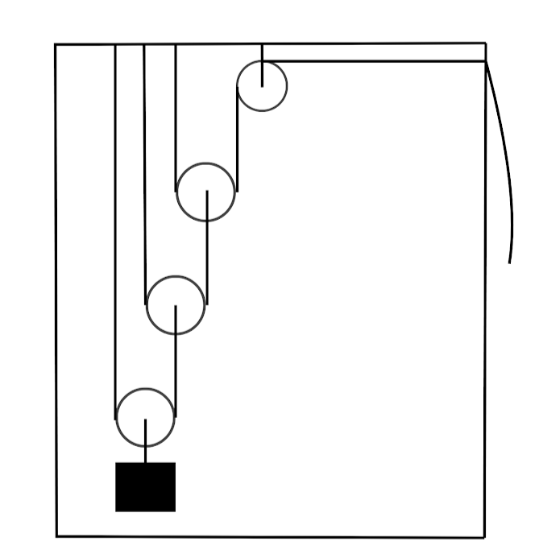
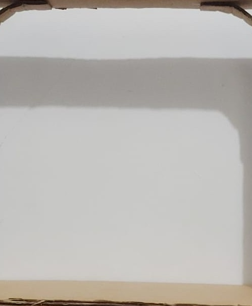

Descrição do Projeto
Nosso projeto consiste na construção de uma estrutura de papelão contendo três polias móveis e uma polia fixa. O objetivo é demonstrar como diferentes combinações de polias podem alterar o esforço necessário e a direção da força para levantar um peso.
A polia fixa é instalada no topo da estrutura, presa em um ponto que não se move. Já as polias móveis são conectadas entre si e no topo da estrutura e uma é conectada diretamente ao peso.
A corda é dividida em 4 partes, uma para ligar o peso a uma das polias e as outras 3 partes para sustentar as polias e liga-las entre si, onde a corda passa pela polia com um dos seus lados fixados ao teto da estrutura e o outro fixado ao centro da polia móvel seguinte. Na terceira polia móvel, a última, a corda, ao invés de se fixar a próxima polia, passa pela polia fixa, mudando de direção e saindo da estrutura por onde será puxada.

Passos do projeto:
- Construção da estrutura de papelão que sustenta as polias.
- Fixação da polia fixa no topo da estrutura.
- Instalação da corda.
- Instalação das polias.
- Instalação do peso conectado à polia.
- Teste de levantamento do peso utilizando o sistema completo.
- Registro de fotos e vídeos mostrando o funcionamento.
Fotos e Vídeos do Projeto



*Descrição do vídeo*